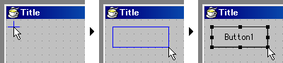
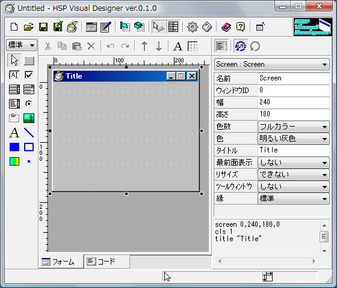
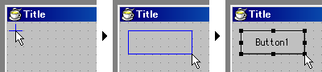
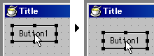
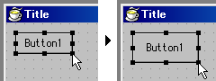

フォーム上の設置したい場所をクリックした後、ドラッグしてオブジェクトの大きさを決めて、マウスボタンを放すと設置できます。
「
 グリッドの設定」で「グリッドにスナップ」がチェックされていると、位置や大きさがグリッドに合わせられます。
グリッドの設定」で「グリッドにスナップ」がチェックされていると、位置や大きさがグリッドに合わせられます。
シフトキーを押しながらドラッグすると、大きさが正方形になります。
オブジェクトは、フォームからはみ出す位置に設置することはできません。
HSP Visual Designer を起動すると、以下のようなウィンドウが表示されます。

まず、ツールボックスで設置したいオブジェクトを選びます。
フォーム上の設置したい場所をクリックした後、ドラッグしてオブジェクトの大きさを決めて、マウスボタンを放すと設置できます。
「グリッドの設定」で「グリッドにスナップ」がチェックされていると、位置や大きさがグリッドに合わせられます。

シフトキーを押しながらドラッグすると、大きさが正方形になります。
オブジェクトは、フォームからはみ出す位置に設置することはできません。
選択ツールでオブジェクトを選択してドラッグすると、オブジェクトを移動できます。

Shiftキーを押しながらドラッグすると、垂直・水平に移動できます。
オブジェクトの四隅とその中間にあるハンドルをドラッグすると、オブジェクトのサイズを変更できます。

また、複数のオブジェクトを選択して、まとめて移動したり、位置や大きさを揃えることができます。
複数のオブジェクトを選択する方法は3通りあります。
プロパティボックスで、オブジェクトの各種属性を設定します。
「自動更新」にチェックを入れている場合は、設定がすぐに反映されます。
そうでない場合、「更新」ボタンを押した時に反映されます。
各プロパティ名にカーソルを持っていくと、簡単な説明がステータスバーに表示されるので、それを参考にしてください。
プロパティ名の横に「...」と表示されている場合、プロパティ名のところでクリックすると、ダイアログが開いて参照できます。
フォームを作成したら、ツールバーの「 フォームを保存」ボタンを押して保存します。
フォームを保存」ボタンを押して保存します。
フォームが完成したら、HSPのソースに変換しましょう。
ツールバーの「 HSPソースに変換」ボタンを押して、保存するファイル名を指定し、変換オプションを指定します。
HSPソースに変換」ボタンを押して、保存するファイル名を指定し、変換オプションを指定します。
HSPソースへの変換はできても、HSPソースからの読み込みはできないので、作成したフォームは「フォームを保存」で保存しておきましょう。